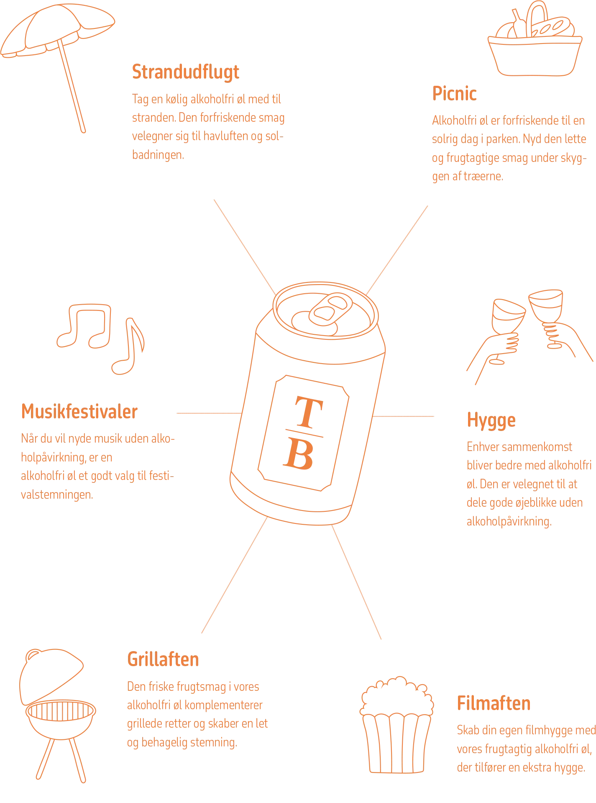

Anbefalede anledninger til at drikke alkoholfri øl
Træd ind i en verden af forfriskende og velsmagende oplevelser med vores alkoholfri øl, samt udforsk vores frugtige smagsvarianter og opdag, hvordan den autentiske smag kan berige dine særlige øjeblikke.
Vi har skabt en guide for at inspirere dig til hvornår du kan drikke vores øl, hvor hver anledning er en lejlighed til at løfte glasset med TrøjborgBrygs alkoholfri øl. Skål for smagfulde stunder og nyd ølbrydningens kunst uden alkohol.
